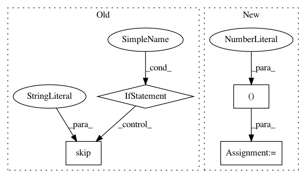

c94623ad0dac5fa5ce7a9a3c4ecb794351ebc610,tests/python/frontend/tflite/test_forward.py,,_test_relu,#Any#Any#,2870
Before Change
One iteration of ReLU
if quantized:
if package_version.parse(tf.VERSION) < package_version.parse("2.1.0"):
pytest.skip("Testcase requires tflite version >= 2.1.0")
data_in = tf.keras.layers.Input(shape=data.shape[1:])
relu = tf.keras.layers.ReLU()(data_in)
keras_model = tf.keras.models.Model(inputs=data_in, outputs=relu)
input_name = data_in.name.split(":")[0]
After Change
inq_data = tf.quantization.fake_quant_with_min_max_args(
in_data, min=-10, max=10, name="inq_0"
)
input_range = {"inq_0": (-10, 10)}
out = nn_ops.relu(inq_data)
out = tf.quantization.fake_quant_with_min_max_args(out, min=0, max=6, name="out")
compare_tflite_with_tvm(
data, "inq_0:0", [inq_data], [out], quantized=True, input_range=input_range
In pattern: SUPERPATTERN
Frequency: 3
Non-data size: 4
Instances
Project Name: apache/incubator-tvm
Commit Name: c94623ad0dac5fa5ce7a9a3c4ecb794351ebc610
Time: 2020-10-29
Author: anshuman.t@huawei.com
File Name: tests/python/frontend/tflite/test_forward.py
Class Name:
Method Name: _test_relu
Project Name: arraiy/torchgeometry
Commit Name: 0234315776751221ef9da5d2073e32f9f54c01bb
Time: 2020-11-01
Author: edgar.riba@gmail.com
File Name: test/color/test_gray.py
Class Name: TestRgbToGrayscale
Method Name: test_jit
Project Name: hyperspy/hyperspy
Commit Name: fb59435ae8d3603ffc71e8b4eb17b4cec496cddf
Time: 2018-07-03
Author: frandelapena@gmail.com
File Name: hyperspy/tests/signal/test_tools.py
Class Name: Test3D
Method Name: test_rebin